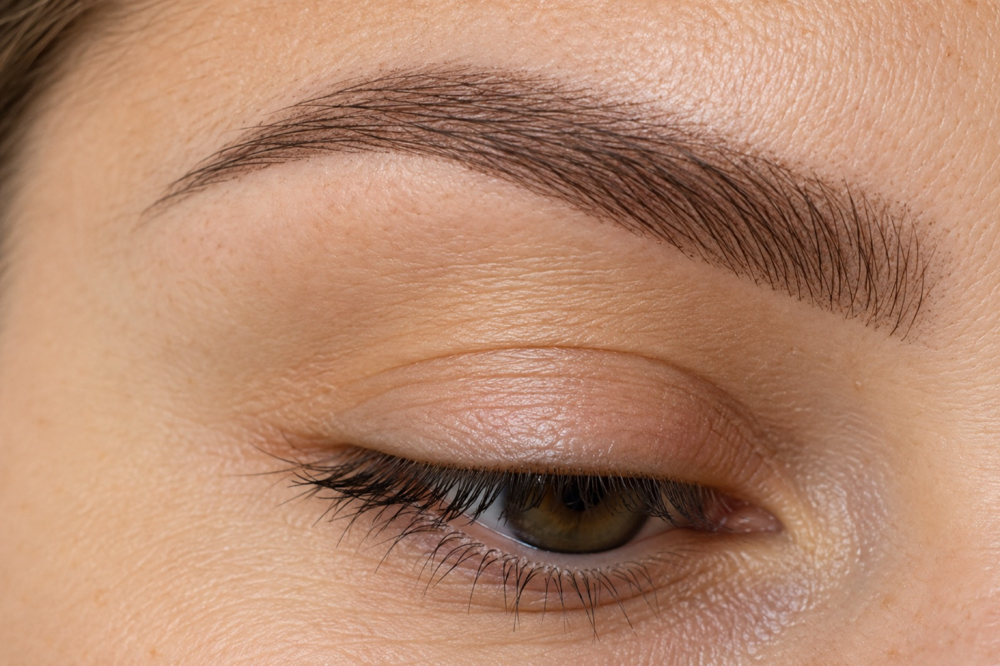

Permanent Make-up / Microblading
Brauen mit dauerhafter Struktur
Mit Microblading und Powder Brows zeichnen wir Ihre Brauenform fein nach oder füllen Lücken auf. Gesichtsform und Haarfarbe entscheiden mit, Ihr Alltag auch.
- Ziel
- Eine natürlich wirkende Brauenform, die morgens Zeit spart.
- Dauer
- Sagen wir Ihnen im Beratungsgespräch.
- Ablauf
- Beratung und Formfindung, Behandlung, Hinweise zur Nachpflege.
- Nachpflege
- Sie bekommen mit, worauf Sie in den Tagen nach dem Termin achten.